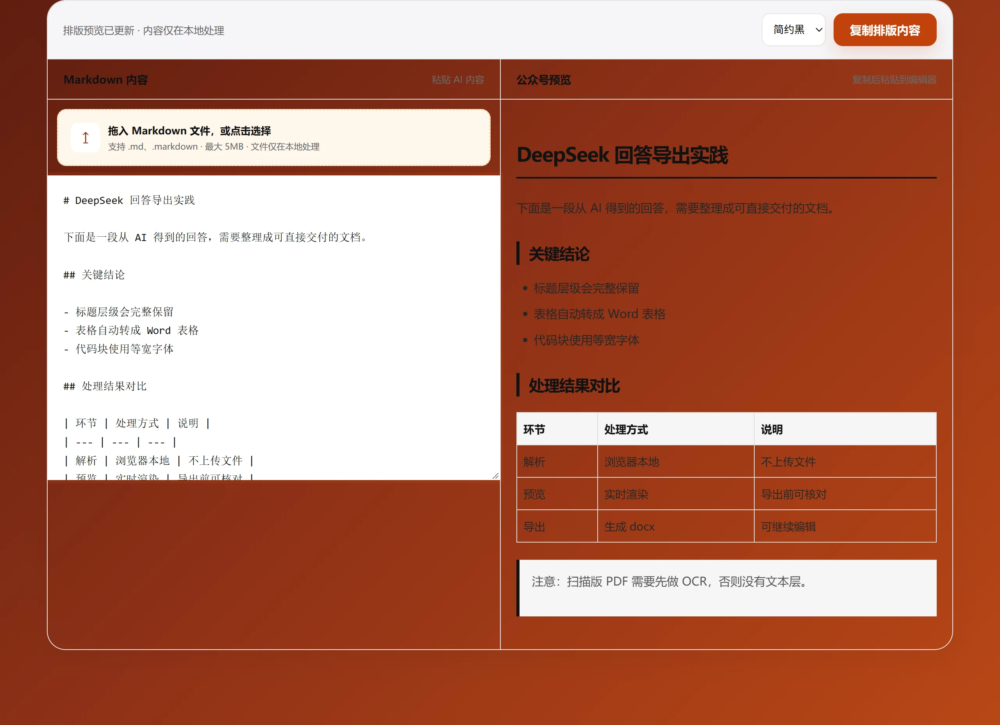

粘贴内容
保留 AI 回答中的标题、列表、引用和表格结构。
内容发布工具
将 DeepSeek、豆包、腾讯元宝、通义千问、文心一言、ChatGPT 等 AI 内容整理为清晰的公众号富文本，一键复制到微信公众号编辑器。

发布流程
保留 AI 回答中的标题、列表、引用和表格结构。
选择适合文章的配色，并检查标题层级和段落间距。
复制富文本后，直接粘贴到微信公众号编辑器。
常见问题
排版只在浏览器本地完成。
可以。DeepSeek、豆包、腾讯元宝、通义千问、ChatGPT、Claude 等 AI 输出的常见 Markdown 结构都可以直接粘贴。
点击“复制排版内容”，再粘贴到微信公众号编辑器。发布前建议检查图片、链接和数据准确性。
不会。解析、预览和复制操作均在当前浏览器本地完成。
目前提供简约黑、森林绿与海洋蓝三种基础文章配色，可在预览后选择。
适用场景
模型输出的 Markdown 粘进来，一次成型，不用在编辑器里逐段调格式。
同一个主题反复使用，标题、引用和代码块的样式不会漂移。
公众号编辑器不擅长这些元素，内联样式能保住基本呈现。
限制
公众号编辑器只接受富文本，必须走「复制富文本」这一步。
图片不会随富文本传递，需要单独上传到素材库。
超过四列的表建议拆成两张，公众号会自动压缩列宽。
其他工具